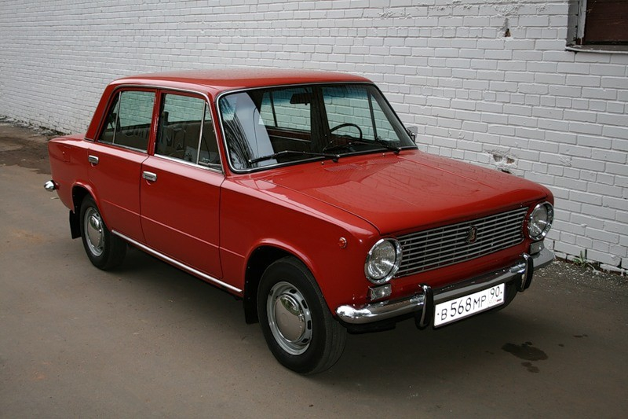
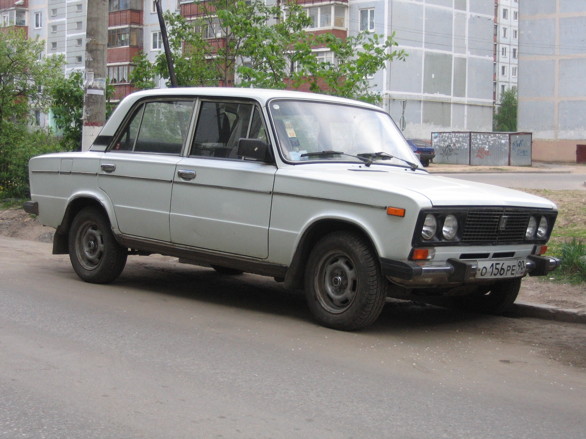

История создания завода
В 1960 году в Советском Союзе отсутствовали технологии для того, чтобы производить качественный автотранспорт. Для увеличения возможностей завода, в проектировании принял участие концерн Италии – Fiat. Через 6 лет был подписан контракт А. Тарасовым – министром автопромышленности. Д. Аньелли (глава Fiat) принял все необходимые меры для организации производства на территории Тольятти. Большое значение имело использование авторских идей и лучшего оборудования того времени.
Ударная комсомольская стройка началась зимой 1967 года. В масштабном проекте принимали участие компании из ФРГ, Франции, Соединенных Штатов Америки и Великобритании.
В 2000 году за завод началась война. В разборках погибло полтысячи человек – милиционеры, бизнесмены, руководители завода, журналисты, бандиты и даже общественные деятели.
Спустя 8 лет компания Renault скупила четверть акций «АвтоВАЗа». Для охраны завода были задействованы ФГУП «Охрана» и группы СОК, что исключило вероятность возникновения каких-либо разногласий между владельцами предприятия и сторонними лицами, которые хотели бы стать совладельцами.
На период 2008-2009 года наступил экономический кризис, что привело к появлению проблем с экспортом и продажами на территории России. Завод был должен поставщикам около 14 млрд руб. Производство сократилось практически на 50%. Для решения данной проблемы Правительство РФ выделило «АвтоВАЗу» 25 млрд руб. беспроцентной ссуды на срок до 12 месяцев. В качестве помощи была создана специальная программа на государственном уровне, которая подразумевала выдачу автокредитов на автомобили с целью повышения продаж.
В начале осени 2009 года с целью улучшения финансового положения компании массово сократили персонал. Кризис стал причиной снижения качества производимых автомобилей. Через год в силу вступила программа «ЛАДА качество», которая была направлена на изготовление исключительно качественной продукции. Принятые меры для модернизации дали весомый результат – качество автомобилей улучшилось в 10 раз уже чрез 3 года. Рост производства планируется увеличить до 1,2 миллионов автомобилей в год, что указано в бизнес-плане, который действителен до 2020 года.
Первые модели
В 1970 году, без помощи третьих лиц, были выпущены первые 6 автомобилей «Жигули» ВАЗ-2101. Они были сконструированы на базе Fiat. В странах ближайшего зарубежья они были известны под названием «ЛАДА». В производстве были использованы только качественные советские комплектующие. Это значительно повышало эксплуатационные характеристики готовых моделей.
Первые автомобили были маломощными: Двигатель имел объем в 1,2 л. Мощность – всего 62 лошадиные силы. Максимальную скорость можно было развить до 140 км/ч.
Постепенно были приняты меры для усиления подвески, кузова и увеличения дорожного просвета. Производства данной модели автомобиля осуществлялось до 1988 года. Всего было распродано почти 5 млн единиц. Далее было выпущено целое семейство ВАЗ, которые представляли собой модификацию с седан.
Без привлечения третьих лиц была сконструирована вторая модель: 5-дверный универсал – ВАЗ-2102, и ВАЗ-2103 (прообраз Fiat Special 124). Среди наиболее популярных моделей следует выделить ВАЗ-2106, выпущенный в 1976 году.

Начало экспорта
Название «ЛАДА» появилось только в 1971 году. Данные советские автомобили были предназначены для потребителя, проживающего на территории других стран. Популярными «Жигули» стали в Исландии, Норвегии и Венгрии. Большим спросом пользовались в Швеции и Финляндии. Экспорт осуществлялся большими партиями в Канаду и Латинскую Америку. Встретить автомобили советского производства можно было на территории Австралии, Африки и Азии. Экспорт «Жигулей» составил 60% от прибыли, которую приносило отечественное машиностроение.
Стратегическое партнёрство с зарубежными автопроизводителями
Зимой 2008 года Волжский автомобильный завод вместе с Renault стали стратегическими партнерами, что значительно увеличило производительность. Компания «Рено» стала владельцем четверти акций. Через 2 года к ним присоединилась компания Nissan. Все вместе они приняли массу усилий для проведения реконструкции платформы в главном сборочном цеху на заводе в Тольятти. Этот этап стал очень значимым, поскольку позволил компании перейти на более высокий уровень производства автомобильной техники.
Совместная деятельность с зарубежными компаниями пошла на пользу «АвтоВАЗу». На заводе начали использоваться международные стандарты. Сотрудники зарубежных компаний также получили пользу от сотрудничества – переняли опыт мастеров российского рынка. Общими усилиями удалось не только навести порядок в сборочном цеху, но и произвести настоящий фурор в сфере машиностроения.